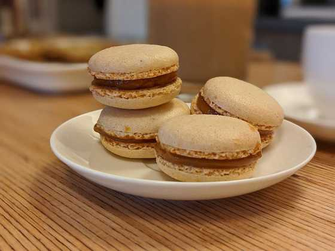

Dolce
路地の奥で、焙煎したての香りと、やさしい甘さをひと皿ずつ。
会津若松・西栄町の隠れ家カフェ路地の奥で、焙煎したての香りと、やさしい甘さをひと皿ずつ。
会津若松・西栄町の隠れ家カフェDolce は、会津若松市西栄町の路地裏にあるカフェです。エスプレッソマシンで淹れるドリンクと自家焙煎コーヒー、創作ドリンク、低糖質スイーツを楽しめます。
店名の Dolce は、イタリア語で「甘い」を意味する言葉です。代表の佐々木裕子さんは、街なかでふらっと立ち寄れるカフェとして営業しながら、街のにぎわいづくりに貢献したいと話しています。
不定期営業で、日程は Instagram で案内されています。営業時間・定休日は準備中です。





確認できた範囲の提供内容です。価格・詳しいメニューは準備中です。


路地を入った先にあって、ちょっと秘密基地みたいでした。コーヒーの香りが良くて、ほっとできます。
甘さが控えめで、食後でも軽く食べられました。ドリンクと一緒にゆっくり過ごせます。
季節の限定ドリンクが気になって、Instagram をのぞいてから行きました。
口コミは制作側が作成したイメージ例で、実在のお客様の声ではありません。
掲載写真は全てフリー素材のイメージで、店舗の実際の様子・商品ではありません。